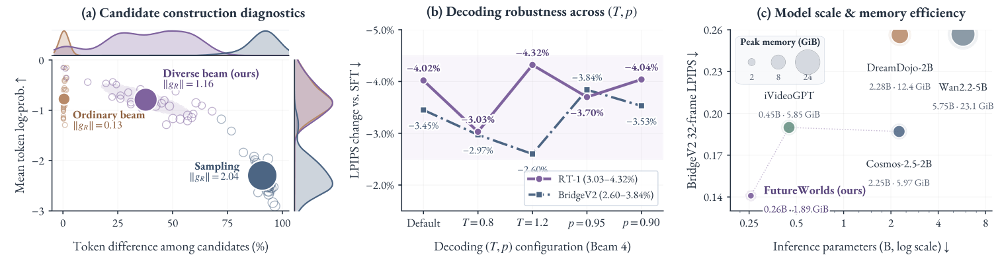

Construct
Diverse beam search builds candidate futures that balance model confidence and diversity.
Branch-Specific Memory for
Long-Horizon Robotic World Models.
A robotic world model trained with diverse candidate futures
and history-consistent policy optimization.
Anonymous code archive available · Anonymous checkpoint links pending
32-frame prediction LPIPS ↓
128 trajectories per dataset · Full baseline comparison
Robotic world models predict future scenes conditioned on actions, providing a foundation for understanding action outcomes. Reinforcement learning improves these models through trajectory rewards, but effective learning requires two conditions: informative comparisons among candidate futures and consistency between policy scoring and generation. Reinforcement learning for autoregressive world models faces obstacles in both respects: conventional beam search suffers from candidate collapse that shrinks within-group reward differences and weakens the learning signal from relative advantages, whereas independent sampling scatters into low-likelihood trajectories; meanwhile, history mismatch makes policy scoring depart from the conditions used for generation. We introduce FutureWorlds, a reinforcement learning framework built on a multimodal discrete autoregressive world model. The framework uses diverse beam search to construct candidate futures that balance model confidence and diversity, and maintains bounded memory for each branch that inherits its parent's history and evolves during generation, ensuring that generation and policy scoring use the same history. As its core training mechanism, MemSPO (Memory-Conditioned Search-Guided Policy Optimization) converts video trajectory rewards into group-relative advantages to optimize the world model. Experiments across multiple robotic manipulation datasets show that, under matched initialization and training budgets, standard GRPO offers limited gains over supervised fine-tuning, whereas MemSPO delivers consistent improvements, reducing long-horizon prediction LPIPS by up to 9.75% and 9.98% relative to supervised fine-tuning and GRPO, respectively. Ablations, optical-flow analysis, and qualitative comparisons further show that these gains manifest in more accurate motion prediction and more consistent object states.
Full scenes and matched detail views reveal differences in object appearance, spatial relations, and robot motion.
FutureWorlds unifies candidate construction, history maintenance, and learning from relative quality in a multimodal discrete autoregressive world model.
Diverse beam search builds candidate futures that balance model confidence and diversity.
Bounded, candidate-specific memory keeps generation and policy scoring conditioned on matching histories.
MemSPO converts video trajectory rewards into group-relative advantages for world-model updates.
Action-conditioned prediction over 32 future frames. Compare the manuscript’s reported PSNR, SSIM, and LPIPS against eight external baselines, alongside the SFT initialization.
| Method | PSNR ↑ | SSIM ↑ | LPIPS ↓ |
|---|---|---|---|
| FitVid | 18.71 | 0.5916 | 0.4750 |
| iVideoGPT | 15.96 | 0.5571 | 0.3833 |
| Vid2World † | 19.67 | 0.6997 | 0.2573 |
| DriftWorld † | 20.51 | 0.7407 | 0.2597 |
| RLVR-World † | 21.21 | 0.7783 | 0.1822 |
| Wan2.2-TI2V-5B | 18.42 | 0.7058 | 0.2478 |
| Cosmos-Predict2.5-2B | 17.77 | 0.6765 | 0.2889 |
| DreamDojo-2B | 18.47 | 0.7152 | 0.2660 |
| SFT initialization | 21.37 | 0.7860 | 0.1734 |
| FutureWorlds | 22.47 | 0.8026 | 0.1551 |
Current manuscript Table 1 · 128 trajectories per dataset. † Official released checkpoints evaluated on RT-1; this does not indicate matched training budgets. Source data ↗
The BridgeV2 comparison places generation quality alongside parameter count and measured peak GPU memory. Bubble area represents memory consumption.
Lower model size and memory do not imply lower inference latency: autoregressive beam decoding remains a cost.
Same 50k-update SFT initialization, 200 post-training updates, and matched reward, memory and evaluation settings. Current manuscript Table 2.
| Method | PSNR ↑ | SSIM ↑ | LPIPS ↓ |
|---|---|---|---|
| SFT (50k) | 21.37 | 0.7860 | 0.1734 |
| GRPO (200) | 21.39 | 0.7858 | 0.1739 |
| Ordinary beam (200) | 21.70 | 0.7908 | 0.1690 |
| MemSPO (200) | 22.45 | 0.8016 | 0.1565 |
| Method | PSNR ↑ | SSIM ↑ | LPIPS ↓ |
|---|---|---|---|
| SFT (50k) | 21.74 | 0.7942 | 0.1448 |
| GRPO (200) | 21.79 | 0.7944 | 0.1442 |
| Ordinary beam (200) | 21.89 | 0.7956 | 0.1424 |
| MemSPO (200) | 21.95 | 0.7960 | 0.1421 |
| Method | PSNR ↑ | SSIM ↑ | LPIPS ↓ |
|---|---|---|---|
| SFT (50k) | 17.50 | 0.7519 | 0.1971 |
| GRPO (200) | 18.03 | 0.7581 | 0.1919 |
| Ordinary beam (200) | 17.98 | 0.7607 | 0.1906 |
| MemSPO (200) | 18.29 | 0.7600 | 0.1877 |
RT-1 LPIPS reduction: 9.75% vs. SFT and 9.98% vs. GRPO, as reported in Table 2. Download 10-, 20- and 32-frame results ↓

One entry point for evaluation, matched post-training comparisons, memory ablations, and retraining. Configure your local assets once.
Run ./setup.sh in the repository.
Use the paired checkpoints, codec, fixed-cohort data, and pinned T5 snapshot. Anonymous asset download links are not yet configured.
Copy configs/paths.example.json to configs/paths.local.json and edit the paths and GPU count.
./run.sh --config configs/paths.local.json \
--suite main-tableEvaluate the three FutureWorlds main-table checkpoints at 10, 20, and 32 frames.
A clear separation between implemented workflows, verified checks, and the remaining public-release steps.
SFT, MemSPO, GRPO, ordinary beam search, native codecs, inference, evaluation, and checkpoint recovery.
15 predictor variants and 3 codecs verified, approximately 9.27 GB in total. Frozen T5 is a separate dependency.
19 Linux CPU checks pass, including two-process training and recovery. On three real checkpoints, the first predicted frame exactly matches the original implementation. Full GPU regression remains pending.
The one-command main-table workflow covers FutureWorlds, not retraining all external baselines. Anonymous asset links and the license for original additions are pending; upstream licenses remain in effect.